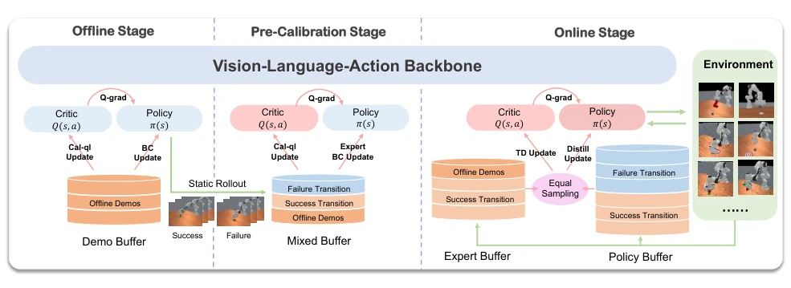
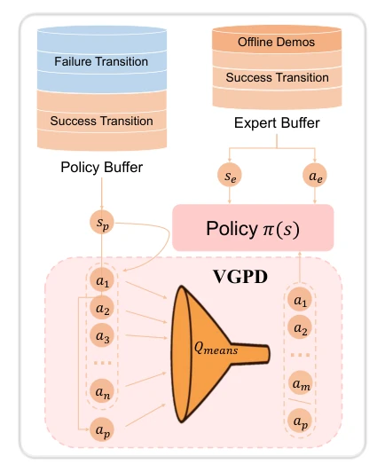
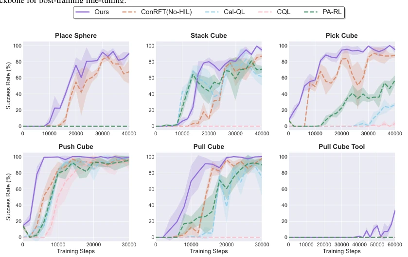
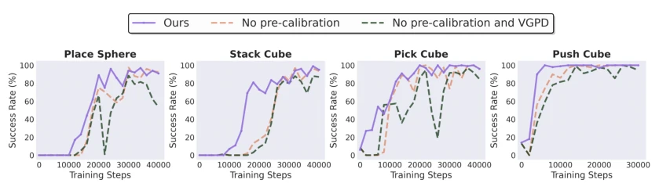
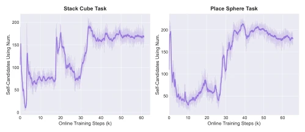
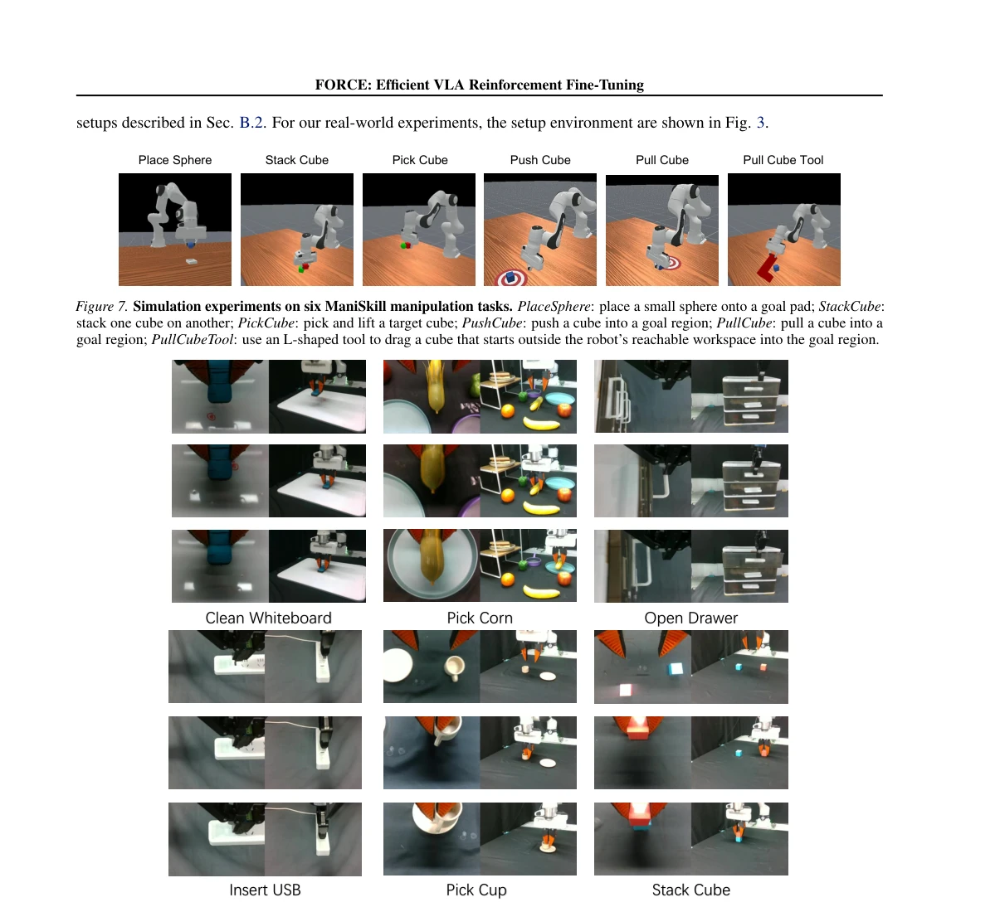

This paper proposes a 'stable' strategy for VLA RL fine-tuning, attempting to calibrate the Q-function prior to fine-tuning without relying on human intervention (HiL). The authors keenly observe that relying solely on imitation learning (IL) has a performance ceiling, while direct RL application is prone to 'collapse' (catastrophic unlearning). FORCE employs a three-stage pipeline, highlighted by the VGPD mechanism, which utilizes value-guided distillation akin to 'selecting the best from the best' to filter out exploration noise. However, notable drawbacks are evident: VGPD requires sampling K candidate actions, resulting in non-trivial inference costs, a bottleneck acknowledged by the authors themselves. Furthermore, despite the claim of being intervention-free, the quality of offline data remains critical in determining the performance ceiling, as one cannot make something from nothing. In summary, this work serves as an important stepping stone toward VLA deployment, yet remains distant from 'fully automatic' operation, and computational overhead may pose deployment challenges.
研究动机Motivation
VLA 模型通常基于模仿学习（IL）预训练，但受限于演示数据质量，存在“模仿天花板”（Ross et al., 2011）。虽然 RL 微调能突破此限制，但面临样本效率低的问题（Haarnoja et al., 2018）。核心痛点有二：一是离线到在线转移时的“初始遗忘”（catastrophic initial unlearning），因 Q 函数不稳定导致性能崩塌（Nakamoto et al., 2023）；二是探索数据质量差，迫使现有方法依赖昂贵且难扩展的人类干预（Luo et al., 2025）。现有方法如 Cal-QL 过于保守，ConRFT 等仍需优化。FORCE 旨在解决分布偏移和探索噪声，实现无需人类干预的高效微调。
VLA models are typically pre-trained using imitation learning (IL), but are constrained by demonstration data quality, exhibiting an 'imitation ceiling' (Ross et al., 2011). While RL fine-tuning can overcome this limitation, it encounters issues of low sample efficiency (Haarnoja et al., 2018). There are two core pain points: first, 'initial forgetting' (catastrophic initial unlearning) during the offline-to-online transition, causing performance collapse due to Q-function instability (Nakamoto et al., 2023); second, poor quality of exploration data forces existing methods to depend on costly and difficult-to-scale human intervention (Luo et al., 2025). Existing approaches such as Cal-QL are overly conservative, while methods like ConRFT still require optimization. FORCE aims to address distribution shift and exploration noise, enabling efficient fine-tuning without human intervention.
FORCE comprises three stages. Stage 1: Offline RL fine-tuning, utilizing Cal-QL to learn a conservative Q-function, constraining value estimation through calibration regularization terms to prevent OOD action overestimation. Stage 2: Distribution Calibration Warm-up, collecting a small amount of online trajectories mixed with offline data to re-calibrate the Q-function support domain, align policy visitation distribution, and mitigate distribution shift. Stage 3: Online fine-tuning, introducing Value-Guided Policy Self-Distillation (VGPD). It maintains an expert buffer and a policy buffer; VGPD computes a dynamic value baseline (Qmean) and only distills actions with positive advantage (Positive Advantage Truncation). This functions as a dynamic filter, ensuring policy updates are based on high-value transitions, avoiding low-quality exploration noise. Theoretically grounded in regularized policy improvement, it is implemented via exponential energy weighting masked by an advantage filter. The overall process achieves stable policy improvement through pre-calibration and filtering, requiring no human intervention.

Figure 1. Overview of the FORCE framework. Our method employs a three-stage reinforcement fine-tuning pipeline that progressively calibrates value estimation and stabilizes policy improvement: (1) offline Cal-QL pretraining to obtain a conservative and well-grounded critic, (2) mixed-rollout value pre-calibration to bridge offline and online distributions and mitigate O2O drift, and (3) online fine-tuning with balanced expert/policy replay coupled with VGPD, enabling safe and sample-efficient policy refinement beyond the imitation ceiling.

Figure 2. VGPD module in the online phase. VGPD serves as a regularized policy improvement mechanism. We maintain an ex- pert buffer and a policy buffer. For states sampled from the policy buffer, we compute a dynamic value baseline Vref(s) (approxi- mated by Qmean). The policy is updated via filtered importance sampling, distilling only from actions that show positive advantage over this baseline.
Evaluated on ManiSkill simulation and Franka robot real-world tasks. Baselines include BC, Cal-QL, ConRFT, etc. Metrics include Success Rate and Steps. Simulation results indicate FORCE achieves an average success rate of 82.3%, outperforming ConRFT by over 10%, with training accelerated by 32.5%. In real-world tasks, the average success rate improved from 45% to 98.3%, with some tasks reaching 100%. Ablation studies demonstrate that the warm-up stage prevents cold-start collapse, while VGPD ensures asymptotic optimality. The VGPD mechanism adaptively shifts from imitation to exploration during training without manual hyperparameter tuning. The Steps@80% metric indicates FORCE is significantly faster than variants.

Figure 4. Learning Curves. We present the performance of our proposed FORCE and baselines in ManiSkill tasks. The evaluation spans three random seeds. FORCE consistently demonstrates faster convergence and higher final performance, validating the benefits of distributional warm-up and value-guided updates.

Figure 5. Ablation Study. Training curves across four tasks comparing full FORCE against variants without warm-up or VGPD. The results highlight the necessity of mitigating initial distribution shift and filtering policy updates.

Figure 6. Adaptive Nature of VGPD. We visualize the proportion of ”active” learning targets derived from the policy itself (Self- Distillation) versus the offline buffer over time. The mechanism naturally transitions from cloning to exploration.

Figure 8. Camera view of successful trajectories on real-world experiment tasks.